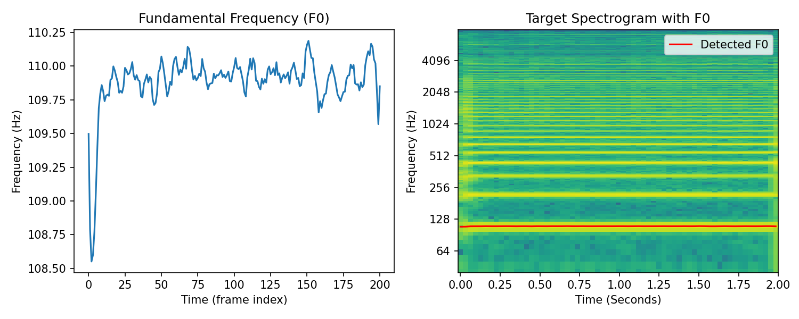
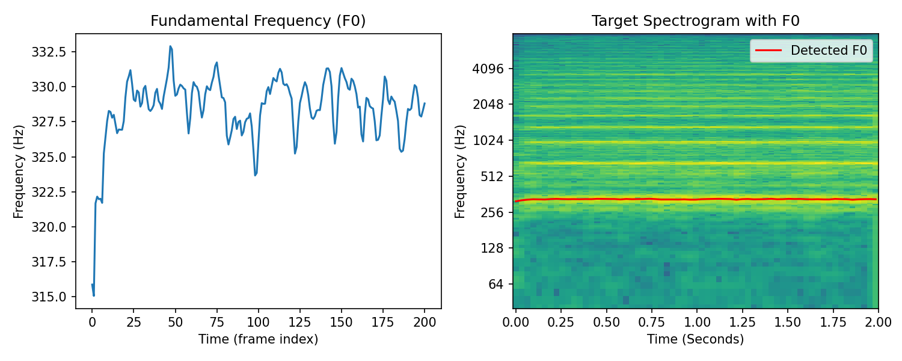

Harmonic Synthesis Results#
Let’s see some more sound match examples with our differentiable harmonic synthesizer.
Crepe Pitch Extraction#
The Crepe pitch extraction algorithm [KSLB18] was used in the original work by [EHGR20] and provides a more accurate and richer fundamental frequency envelope. This can help improve the final results of synthesis.
Crepe can be installed from PyPi. We replaced functional.detect_pitch_frequency with crepe.predict to produce the examples in these book.
The code for that is:
frame_ms = 10.0
_, f0, _, _ = crepe.predict(
audio.numpy()[0], sample_rate, step_size=frame_ms, viterbi=True
)
f0 = torch.from_numpy(f0).unsqueeze(0)
Comparison of fundamental frequency envelopes

Saxophone#
Target#

Result#
Guitar#
Target#

Result#
Challenges: Onsets and Transients#
If you listen to the very beginning of the synthesized results, especially in the guitar, you’ll hear that it is missing the sharp pluck. The onset has been smoothed out by our harmonic synthesizer. The onset, or transient, portion of a signal is defined by abrupt changes in amplitude, phase, or frequency information. Sinusoidal/harmonic synthesis does not work well for these signal components. Transient modelling has been a topic of recent research in DDSP synthesis focused on sound effect modelling [BarahonaRiosC23][LJG23] and drum synthesis [SCR+23].
Violin#
Target#

Result#
Voice#
Target#

Result#
Challenges: Noise, Room Sounds, Chorusing#
In the violin and voice synthesis results, we can hear some choppiness and distortion. Inspecting the spectrograms of the targets we can see that there is significant signal energy in between the prominent harmonics. We can attribute these signal components to a number of factors. In the violin there is extra noise produced from the bow string. There is also room reverbation present in both these signals that cause a spectral smearing effect.
We can hear distortion in the synthesized signal, which may be created by the optimizer in an attempt to minimize the error from these noisy/reverberant signal components with respect to the multi-resolution spectral loss. Both noise and room reverberation were addressed by Engel et al. [EHGR20] through the introduction of specialized DDSP modules.
We can also hear in the voice sample that there may be more than one voice present, creating a chorus-effect, which are slight pitch deviations between the different voices. This is more challenging phenomenon to reproduce. We could try to add more instances of our harmonic synthesizer with slight pitch deviations between the instances. This approach could be thought of as polyphonic rendering, a topic that was explored in the context of piano synthesis by Renault et al. [RMR22]. Another approach could be to add a chorus audio effect to the output of our synthesizer which attempts to mimic the perceptual effect of multiple monophonic sources. Differentiable chorus effects were explored by Masuda and Saito [MS23].
Drum#
Target#

Result#
Challenges: Complex non-harmonic sounds#
Our harmonic synthesizer worked surprisingly well on this drum sound given the increase in complexity! Although, we can hear clearly that there is significant distortion in the results. Along with the challenges previously mentioned (i.e., transients, noise, room reverb), we also have to contend with non-harmonic partials in drum sounds. So, it is not surprising that our harmonic synthesizer failed to model this sound!
Let’s look a bit more closely at the problem:


Both figures on the left are spectrograms of the target drum sound. The right top shows the target spectrogram with an overlay of the first 16 harmonics of the fundamental frequency and the bottom right shows the spectrogram of our synthesizer after optimization.
It looks like the first and second harmonic partials line up with partials in the drum sound, but the remaining partials are much less clear.
There is significant energy in partials that have non-harmonic relationships with the fundamental. We hear our optimizer has struggled to deal with this extra energy and has created distorted amplitude envelopes, potentially in attempt to contend with this.
So what’s the solution? Ideally, we would let the optimizer pick the correct frequencies for our partials. But, if you recall from earlier, this is a challenging, non-convex problem.
Recent work has begun to tackle this problem. Hayes et al. [HSF23] proposed a surrogate approach for frequency estimation using gradient descent, which may enable direct optimization of non-harmonic sinusoidal frequencies. Diaz et al. [DHS+23] learned to model non-harmonic partials of rigid-body percussion sounds differentiably using banks of IIR resonators. Alternatively, estimation of non-harmonic partials can be offloaded to a pre-processing step, as was the case in the hybrid drum synthesis method proposed by Shier et al. [SCR+23].
Summary#
This concludes our implementation and exploration of a differentiable harmonic synthesizer. We’ve seen that this synthesizer is capable of modelling quite a wide range of harmonic instrumental sounds. We saw that as our target became more complicated, we started hear errors in the harmonic synthesis results. In practice, the harmonic synthesizer is one component in a larger system. The addition of different DDSP modules and variations on this harmonic synthesizer will enable us to model different acoustical atteributes.
References#
- DHS+23
Rodrigo Diaz, Ben Hayes, Charalampos Saitis, György Fazekas, and Mark Sandler. Rigid-body sound synthesis with differentiable modal resonators. In IEEE International Conference on Acoustics, Speech and Signal Processing (ICASSP). IEEE, 2023.
- EHGR20(1,2)
Jesse Engel, Lamtharn (Hanoi) Hantrakul, Chenjie Gu, and Adam Roberts. DDSP: Differentiable Digital Signal Processing. In 8th International Conference on Learning Representations. April 2020.
- HSF23
Ben Hayes, Charalampos Saitis, and György Fazekas. Sinusoidal frequency estimation by gradient descent. In ICASSP 2023-2023 IEEE International Conference on Acoustics, Speech and Signal Processing (ICASSP), 1–5. IEEE, 2023.
- KSLB18
Jong Wook Kim, Justin Salamon, Peter Li, and Juan Pablo Bello. Crepe: a convolutional representation for pitch estimation. In 2018 IEEE International Conference on Acoustics, Speech and Signal Processing (ICASSP), 161–165. IEEE, 2018.
- LJG23
Yunyi Liu, Craig Jin, and David Gunawan. Ddsp-sfx: acoustically-guided sound effects generation with differentiable digital signal processing. arXiv preprint arXiv:2309.08060, 2023.
- MS23
Naotake Masuda and Daisuke Saito. Improving Semi-Supervised Differentiable Synthesizer Sound Matching for Practical Applications. IEEE/ACM Transactions on Audio, Speech, and Language Processing, 31:863–875, 2023. doi:10.1109/TASLP.2023.3237161.
- RMR22
Lenny Renault, Rémi Mignot, and Axel Roebel. Differentiable Piano Model for Midi-to-Audio Performance Synthesis. In Proceedings of the 25th International Conference on Digital Audio Effects, 8. Vienna, Austria, 2022.
- SCR+23(1,2)
Jordie Shier, Franco Caspe, Andrew Robertson, Mark Sandler, Charalampos Saitis, and Andrew McPherson. Differentiable modelling of percussive audio with transient and spectral synthesis. In Proceedings of the 10th Convention of the European Acoustics Association Forum Acusticum 2023. 2023.
- BarahonaRiosC23
Adrián Barahona-Ríos and Tom Collins. NoiseBandNet: Controllable Time-Varying Neural Synthesis of Sound Effects Using Filterbanks. July 2023. doi:10.48550/arXiv.2307.08007.